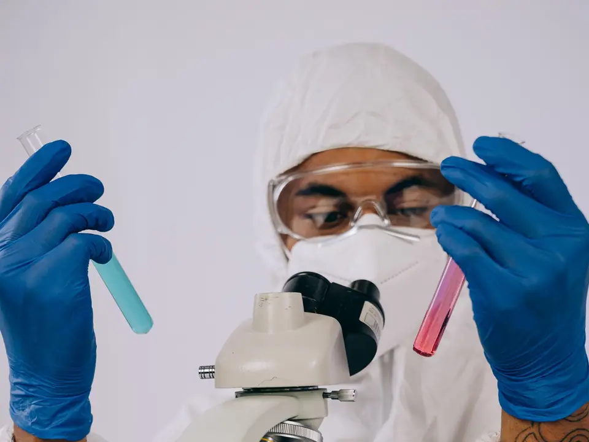
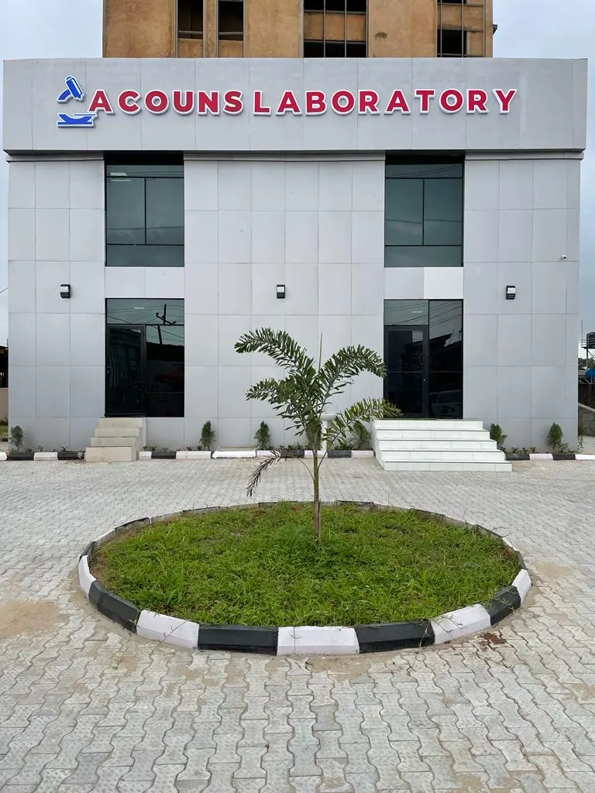

Lab tests, scans and DNA paternity tests in Ajah
What do you need a test for?
- Before marriageGenotype, blood group and more›
- A baby or fertilityTests for men and for women›
- A health checkA basic or a full body check›
- DNA paternityShows if a man is the child's father›
- A scanUltrasound scans done here›
- I am not sureAsk us and we will help you choose›
- Open Monday to Saturday
- Km 12 Lekki-Epe Expressway, Ajah
- 4.5 from 30 Google reviews
Tests and scans
Tick the tests you want. Send one message.
We reply on WhatsApp with the price. Tap Read more to see what a test is, who it is for and how it works.
Test requestAcouns Laboratory, Ajah
See all our departments (11)
- Clinical chemistry (blood and urine tests for your organs)
- Haematology (blood counts and blood conditions)
- Microbiology (germs and infections)
- Hormone tests (thyroid, fertility and other hormones)
- Toxicology (drug and poison tests)
- Serology (antibody tests, such as for hepatitis)
- Histopathology (tissue tests)
- Immunology (immune system and allergy tests)
- Molecular tests (DNA and RNA, including paternity and viral load)
- Ultrasound (scans)
- ECG (heart tracing)
For your company
Tests for your staff
We work with companies, schools, HMOs, hospitals and other labs.
Talk to us about staff tests- Pre-employment tests for new staff
- Food handlers screening
- Nanny and domestic staff screening
- Chemical handlers screening
Reviews
What patients say about Acouns
4.5
30 reviews on Google
- Friendly staff (11)
- Fast lab results (7)
- DNA paternity testing (3)
- Ultrasound scans (2)
Ocloo Corneliusa year ago on Google
I had a great experience at Acouns Lab for my genotype test. The lab was clean and organized, and Mr. Joseph, the lab tech, was incredibly friendly and welcoming. He made the process smooth and comfortable. Highly recommend!
Adeleke Ayodele2 years ago on Google
Honestly,this Guys are good at what they do. I did DNA test at this lab,Results came at the stated time ,and was sent through my email .Very accurate and trustworthy. I recommend them for anyone who may need their services.
Joshua Mokut4 years ago on Google
I called on the number available on google, unlike most places they picked up and were very helpful providing all the information I needed. I needed to do a PCR COVID test. It was quick, the service at Acouns lab is good and reliable. I'd highly recommend it.
Questions
What patients ask first
How much does a test cost?
It depends on the test. Tick the tests you want and send us the message, and we tell you the price.
Do I need to book before I come?
You can walk in during opening hours, or message us first so we are ready for you. to confirm
Is the DNA paternity test private?
Yes. We do DNA paternity tests here in our own lab and keep them confidential.
How will I get my result?
By email or at our front desk. to confirm
When are you open?
Monday to Friday 8am to 5pm, and Saturday 9am to 5pm. We are closed on Sunday.
Find us
Look for this building
Km 12 Lekki-Epe Expressway, opposite Fidelity Bank, Ajah, Lekki, Lagos
Opening hours
| Monday | 8am to 5pm |
|---|---|
| Tuesday | 8am to 5pm |
| Wednesday | 8am to 5pm |
| Thursday | 8am to 5pm |
| Friday | 8am to 5pm |
| Saturday | 9am to 5pm |
| Sunday | Closed |
